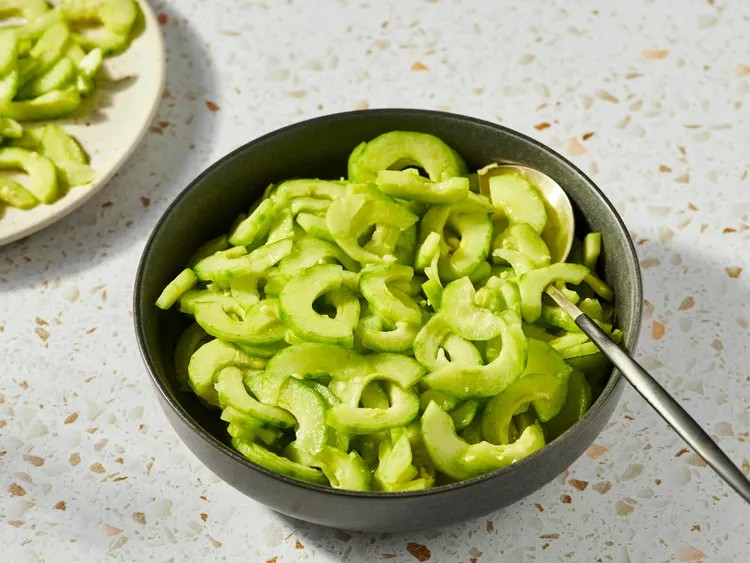

Home
Sunomono

Description
Sunomono is a delicious and simple Japanese cucumber salad made with thinly sliced cucumbers in a sweet and sour vinegar dressing. It makes a refreshing salad or light side dish with salmon or pork
Ingredients
- 2 large cucumbers, peeled
- ⅓ cup rice vinegar
- 4 teaspoons white sugar
- ½ teaspoons minced fresh ginger root or to taste
- 1 teaspoon salt or to taste
Steps
- Gather all ingredients.
- Cut cucumbers in half lengthwise and scoop out any large seeds. Slice crosswise into very thin slices.
- Place vinegar, sugar, ginger, and salt in a small bowl; mix well to combine. Add cucumber slices and stir to coat.